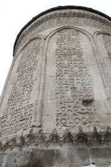

Döner Kümbet
 kopya.jpg)

Döner Kümbet, Kayseri'de 1276 yılında Anadolu Selçuklu Sultanı I. Alaeddin Keykubad'ın kızı Şah Cihan Hatun için yaptırılmıştır. Bu sebeple Şah Cihan Hatun Kümbeti olarak da bilinir. Döner Kümbet Talas yolu üzerinde bulunmaktadır.
Sarımsı renkli kesme taştan, kara taban üzerine oturtulan kümbet, silindirik bir gövdeye sahiptir. Türbenin 12 yüzü de kabartma olarak yapılmış bitkisel ve geometrik motiflerle süslüdür. Türbeye iki yönü dar merdivenlerden çıkılır. Kapı üzerinde bazı yerleri kırılmış insan başlı iki aslan kabartması bulunmaktadır. Döner Kümbet'in kitabesinde tarih yazmaz.
Efsaneye göre bu kümbetin döndüğü söyleniyor.Bu kümbet 1980 yılında koruma altına alınmıştır.
Gövdenin etrafında, kaval silmelerin meydana getirdiği on iki sivri kemerden her birinin çevirdiği yüzeyler, farklı süslemelerle işlenmiştir. Ayrıca taç kapının solunda, bir hurma ağacının üstünde, çift başlı kartal ve iki tarafında birer aslanı gösteren harap bir kabartma, taç kapının sağında da diğer bir hurma ağacı kabartması vardır.
Figürlü plastik süslemelerin bolluğu ile göze çarpan ve abidevi bir çadırı andıran kümbetin kapı cephesi üstünde, insan başlı, kanatlı iki pars figürü arasında çift başlı kartal arması tahrip edilmiş halde belli olmaktadır.
Halk arasında Döner Kümbet olarak bilinen Şah Cihan Hatun Kümbeti, Talas Caddesi üzerinde ve Seyyid Burhanettin Mezarlığı’nın karşısındadır. Kayseri’deki Selçuklu eserlerinin en güzel örneklerinden olan bu türbe kitabesine göre Prenses Şah Cihan Hatun adına yaptırılmıştır. Ancak kitabe de bir tarih belirtilmemektedir. Albert Gabriel "Kayseri Abideleri" adlı eserinde türbeyi Niğde ve Ahlat’taki benzer kümbetler ile karşılaştırarak inşa tarihinin 1275 yılı civarında olabileceğini söylemektedir.
Kümbet kare bir kaide üzerine on iki köşeli bir gövdesi olup, tamamen kesme taştan, mukarnas kornişler üzerine konik külahla, içten ise silindirik mekan üzerine kubbe ile örtülüdür. Türbe kaidesi dört köşesindeki iki dilimli kırma şevlerle on iki köşeye dönüştürülmüştür.
Yapının her yüzünde sivri bir silme taş kemer zeminden kabarık olarak gözükmektedir. Silmeler köşeler boyunca uzanmaktadırlar. Her köşede bir çift sütun bulunmaktadır. Sütunların altı kaidenin saçağına dayanmaktadır. Taç kemerler bir bezeme olarak görünmekle beraber aynı zamanda onikigen prizmadan daireye geçilmesini sağlamaktadırlar. Taç kemerlerin üzerinde geometrik bezemeli iki yuvarlak kuşak bulunmaktadır.

 kopya.jpg)
Gövdenin etrafında, kaval silmelerin meydana getirdiği on iki sivri kemerden her birinin çevirdiği yüzeyler, farklı süslemelerle işlenmiştir. Ayrıca taç kapının solunda, bir hurma ağacının üstünde, çift başlı kartal ve iki tarafında birer aslanı gösteren harap bir kabartma, taç kapının sağında da diğer bir hurma ağacı kabartması vardır.
Figürlü plastik süslemelerin bolluğu ile göze çarpan ve abidevi bir çadırı andıran kümbetin kapı cephesi üstünde, insan başlı, kanatlı iki pars figürü arasında çift başlı kartal arması tahrip edilmiş halde belli olmaktadır.
Girişin iki tarafında küçük nişler bulunmaktadır. Bu nişler mukarnaslı yarım kubbeler halindedir. Kümbetin ana yapısının doğu ve batı duvarlarında iki pencere ve güneyinde de mihrap nişi bulunmaktadır. Mihrap nişi çok köşeli olup, iki köşesinde yarım yuvarlak sütunçeler bulunmaktadır. Mihrap mukarnaslı olarak sona erer. Bunun yanı sıra mihrap geometrik silmeli bir çerçeve içerisine alınmıştır. Kubbenin iç kısmı taş örgülüdür. Yuvarlak kubbe ile duvar arasında silme bir korniş dolanmaktadır.